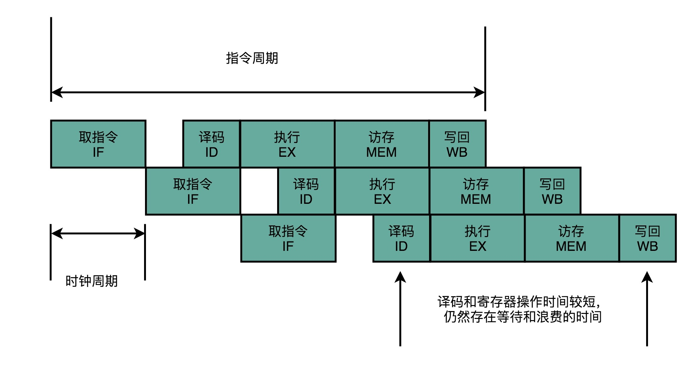

- 00 开篇词 为什么你需要学习计算机组成原理？.md
- 01 冯·诺依曼体系结构：计算机组成的金字塔.md
- 02 给你一张知识地图，计算机组成原理应该这么学.md
- 03 通过你的CPU主频，我们来谈谈“性能”究竟是什么？.md
- 04 穿越功耗墙，我们该从哪些方面提升“性能”？.md
- 05 计算机指令：让我们试试用纸带编程.md
- 06 指令跳转：原来if...else就是goto.md
- 07 函数调用：为什么会发生stack overflow？.md
- 08 ELF和静态链接：为什么程序无法同时在Linux和Windows下运行？.md
- 09 程序装载：“640K内存”真的不够用么？.md
- 10 动态链接：程序内部的“共享单车”.md
- 11 二进制编码：“手持两把锟斤拷，口中疾呼烫烫烫”？.md
- 12 理解电路：从电报机到门电路，我们如何做到“千里传信”？.md
- 13 加法器：如何像搭乐高一样搭电路（上）？.md
- 14 乘法器：如何像搭乐高一样搭电路（下）？.md
- 15 浮点数和定点数（上）：怎么用有限的Bit表示尽可能多的信息？.md
- 16 浮点数和定点数（下）：深入理解浮点数到底有什么用？.md
- 17 建立数据通路（上）：指令加运算=CPU.md
- 18 建立数据通路（中）：指令加运算=CPU.md
- 19 建立数据通路（下）：指令加运算=CPU.md
- 20 面向流水线的指令设计（上）：一心多用的现代CPU.md
- 21 面向流水线的指令设计（下）：奔腾4是怎么失败的？.md
- 22 冒险和预测（一）：hazard是“危”也是“机”.md
- 23 冒险和预测（二）：流水线里的接力赛.md
- 24 冒险和预测（三）：CPU里的“线程池”.md
- 25 冒险和预测（四）：今天下雨了，明天还会下雨么？.md
- 26 Superscalar和VLIW：如何让CPU的吞吐率超过1？.md
- 27 SIMD：如何加速矩阵乘法？.md
- 28 异常和中断：程序出错了怎么办？.md
- 29 CISC和RISC：为什么手机芯片都是ARM？.md
- 30 GPU（上）：为什么玩游戏需要使用GPU？.md
- 31 GPU（下）：为什么深度学习需要使用GPU？.md
- 32 FPGA、ASIC和TPU（上）：计算机体系结构的黄金时代.md
- 33 解读TPU：设计和拆解一块ASIC芯片.md
- 34 理解虚拟机：你在云上拿到的计算机是什么样的？.md
- 35 存储器层次结构全景：数据存储的大金字塔长什么样？.md
- 36 局部性原理：数据库性能跟不上，加个缓存就好了？.md
- 37 理解CPU Cache（上）：“4毫秒”究竟值多少钱？.md
- 38 高速缓存（下）：你确定你的数据更新了么？.md
- 39 MESI协议：如何让多核CPU的高速缓存保持一致？.md
- 40 理解内存（上）：虚拟内存和内存保护是什么？.md
- 41 理解内存（下）：解析TLB和内存保护.md
- 42 总线：计算机内部的高速公路.md
- 43 输入输出设备：我们并不是只能用灯泡显示“0”和“1”.md
- 44 理解IO_WAIT：IO性能到底是怎么回事儿？.md
- 45 机械硬盘：Google早期用过的“黑科技”.md
- 46 SSD硬盘（上）：如何完成性能优化的KPI？.md
- 47 SSD硬盘（下）：如何完成性能优化的KPI？.md
- 48 DMA：为什么Kafka这么快？.md
- 49 数据完整性（上）：硬件坏了怎么办？.md
- 50 数据完整性（下）：如何还原犯罪现场？.md
- 51 分布式计算：如果所有人的大脑都联网会怎样？.md
- 52 设计大型DMP系统（上）：MongoDB并不是什么灵丹妙药.md
- 53 设计大型DMP系统（下）：SSD拯救了所有的DBA.md
- 54 理解Disruptor（上）：带你体会CPU高速缓存的风驰电掣.md
- 55 理解Disruptor（下）：不需要换挡和踩刹车的CPU，有多快？.md
- 结束语 知也无涯，愿你也享受发现的乐趣.md
20 面向流水线的指令设计（上）：一心多用的现代CPU
前面我们用了三讲，用一个个的电路组合，制作出了一个完整功能的 CPU。这里面一下子给你引入了三个“周期”的概念，分别是指令周期、机器周期（或者 CPU 周期）以及时钟周期。
你可能会有点摸不着头脑了，为什么小小一个 CPU，有那么多的周期（Cycle）呢？我们在专栏一开始，不是把 CPU 的性能定义得非常清楚了吗？我们说程序的性能，是由三个因素相乘来衡量的，我们还专门说过“指令数×CPI×时钟周期”这个公式。这里面和周期相关的只有一个时钟周期，也就是我们 CPU 的主频倒数。当时讲的时候我们说，一个 CPU 的时钟周期可以认为是可以完成一条最简单的计算机指令的时间。
那么，为什么我们在构造 CPU 的时候，一下子出来了那么多个周期呢？这一讲，我就来为你说道说道，带你更深入地看看现代 CPU 是怎么一回事儿。
愿得一心人，白首不相离：单指令周期处理器
学过前面三讲，你现在应该知道，一条 CPU 指令的执行，是由“取得指令（Fetch）- 指令译码（Decode）- 执行指令（Execute） ”这样三个步骤组成的。这个执行过程，至少需要花费一个时钟周期。因为在取指令的时候，我们需要通过时钟周期的信号，来决定计数器的自增。
那么，很自然地，我们希望能确保让这样一整条指令的执行，在一个时钟周期内完成。这样，我们一个时钟周期可以执行一条指令，CPI 也就是 1，看起来就比执行一条指令需要多个时钟周期性能要好。采用这种设计思路的处理器，就叫作单指令周期处理器（Single Cycle Processor），也就是在一个时钟周期内，处理器正好能处理一条指令。
不过，我们的时钟周期是固定的，但是指令的电路复杂程度是不同的，所以实际一条指令执行的时间是不同的。在第 13 讲和第 14 讲讲加法器和乘法器电路的时候，我给你看过，随着门电路层数的增加，由于门延迟的存在，位数多、计算复杂的指令需要的执行时间会更长。
不同指令的执行时间不同，但是我们需要让所有指令都在一个时钟周期内完成，那就只好把时钟周期和执行时间最长的那个指令设成一样。这就好比学校体育课 1000 米考试，我们要给这场考试预留的时间，肯定得和跑得最慢的那个同学一样。因为就算其他同学先跑完，也要等最慢的同学跑完间，我们才能进行下一项活动。

快速执行完成的指令，需要等待满一个时钟周期，才能执行下一条指令
所以，在单指令周期处理器里面，无论是执行一条用不到 ALU 的无条件跳转指令，还是一条计算起来电路特别复杂的浮点数乘法运算，我们都等要等满一个时钟周期。在这个情况下，虽然 CPI 能够保持在 1，但是我们的时钟频率却没法太高。因为太高的话，有些复杂指令没有办法在一个时钟周期内运行完成。那么在下一个时钟周期到来，开始执行下一条指令的时候，前一条指令的执行结果可能还没有写入到寄存器里面。那下一条指令读取的数据就是不准确的，就会出现错误。

前一条指令的写入，在后一条指令的读取之前
到这里你会发现，这和我们之前第 3 讲和第 4 讲讲时钟频率时候的说法不太一样。当时我们说，一个 CPU 时钟周期，可以认为是完成一条简单指令的时间。为什么到了这里，单指令周期处理器，反而变成了执行一条最复杂的指令的时间呢？
这是因为，无论是 PC 上使用的 Intel CPU，还是手机上使用的 ARM CPU，都不是单指令周期处理器，而是采用了一种叫作指令流水线（Instruction Pipeline）的技术。
无可奈何花落去，似曾相识燕归来：现代处理器的流水线设计
其实，CPU 执行一条指令的过程和我们开发软件功能的过程很像。
如果我们想开发一个手机 App 上的功能，并不是找来一个工程师，告诉他“你把这个功能开发出来”，然后他就吭哧吭哧把功能开发出来。真实的情况是，无论只有一个工程师，还是有一个开发团队，我们都需要先对开发功能的过程进行切分，把这个过程变成“撰写需求文档、开发后台 API、开发客户端 App、测试、发布上线”这样多个独立的过程。每一个后面的步骤，都要依赖前面的步骤。
我们的指令执行过程也是一样的，它会拆分成“取指令、译码、执行”这样三大步骤。更细分一点的话，执行的过程，其实还包含从寄存器或者内存中读取数据，通过 ALU 进行运算，把结果写回到寄存器或者内存中。
如果我们有一个开发团队，我们不会让后端工程师开发完 API 之后，就歇着等待前台 App 的开发、测试乃至发布，而是会在客户端 App 开发的同时，着手下一个需求的后端 API 开发。那么，同样的思路我们可以一样应用在 CPU 执行指令的过程中。
通过过去三讲，你应该已经知道了，CPU 的指令执行过程，其实也是由各个电路模块组成的。我们在取指令的时候，需要一个译码器把数据从内存里面取出来，写入到寄存器中；在指令译码的时候，我们需要另外一个译码器，把指令解析成对应的控制信号、内存地址和数据；到了指令执行的时候，我们需要的则是一个完成计算工作的 ALU。这些都是一个一个独立的组合逻辑电路，我们可以把它们看作一个团队里面的产品经理、后端工程师和客户端工程师，共同协作来完成任务。

流水线执行示意图
这样一来，我们就不用把时钟周期设置成整条指令执行的时间，而是拆分成完成这样的一个一个小步骤需要的时间。同时，每一个阶段的电路在完成对应的任务之后，也不需要等待整个指令执行完成，而是可以直接执行下一条指令的对应阶段。
这就好像我们的后端程序员不需要等待功能上线，就会从产品经理手中拿到下一个需求，开始开发 API。这样的协作模式，就是我们所说的指令流水线。这里面每一个独立的步骤，我们就称之为流水线阶段或者流水线级（Pipeline Stage）。
如果我们把一个指令拆分成“取指令 - 指令译码 - 执行指令”这样三个部分，那这就是一个三级的流水线。如果我们进一步把“执行指令”拆分成“ALU 计算（指令执行）- 内存访问 - 数据写回”，那么它就会变成一个五级的流水线。
五级的流水线，就表示我们在同一个时钟周期里面，同时运行五条指令的不同阶段。这个时候，虽然执行一条指令的时钟周期变成了 5，但是我们可以把 CPU 的主频提得更高了。我们不需要确保最复杂的那条指令在时钟周期里面执行完成，而只要保障一个最复杂的流水线级的操作，在一个时钟周期内完成就好了。
如果某一个操作步骤的时间太长，我们就可以考虑把这个步骤，拆分成更多的步骤，让所有步骤需要执行的时间尽量都差不多长。这样，也就可以解决我们在单指令周期处理器中遇到的，性能瓶颈来自于最复杂的指令的问题。像我们现代的 ARM 或者 Intel 的 CPU，流水线级数都已经到了 14 级。
虽然我们不能通过流水线，来减少单条指令执行的“延时”这个性能指标，但是，通过同时在执行多条指令的不同阶段，我们提升了 CPU 的“吞吐率”。在外部看来，我们的 CPU 好像是“一心多用”，在同一时间，同时执行 5 条不同指令的不同阶段。在 CPU 内部，其实它就像生产线一样，不同分工的组件不断处理上游传递下来的内容，而不需要等待单件商品生产完成之后，再启动下一件商品的生产过程。
超长流水线的性能瓶颈
既然流水线可以增加我们的吞吐率，你可能要问了，为什么我们不把流水线级数做得更深呢？为什么不做成 20 级，乃至 40 级呢？这个其实有很多原因，我在之后几讲里面会详细讲解。这里，我先讲一个最基本的原因，就是增加流水线深度，其实是有性能成本的。
我们用来同步时钟周期的，不再是指令级别的，而是流水线阶段级别的。每一级流水线对应的输出，都要放到流水线寄存器（Pipeline Register）里面，然后在下一个时钟周期，交给下一个流水线级去处理。所以，每增加一级的流水线，就要多一级写入到流水线寄存器的操作。虽然流水线寄存器非常快，比如只有 20 皮秒（ps，10−1210−12 秒）。

但是，如果我们不断加深流水线，这些操作占整个指令的执行时间的比例就会不断增加。最后，我们的性能瓶颈就会出现在这些 overhead 上。如果我们指令的执行有 3 纳秒，也就是 3000 皮秒。我们需要 20 级的流水线，那流水线寄存器的写入就需要花费 400 皮秒，占了超过 10%。如果我们需要 50 级流水线，就要多花费 1 纳秒在流水线寄存器上，占到 25%。这也就意味着，单纯地增加流水线级数，不仅不能提升性能，反而会有更多的 overhead 的开销。所以，设计合理的流水线级数也是现代 CPU 中非常重要的一点。
总结延伸
讲到这里，相信你已经能够理解，为什么我们的 CPU 需要流水线设计了，也能把每一个流水线阶段在干什么，和上一讲的整个 CPU 的数据通路的连接过程对上了。
可以看到，为了能够不浪费 CPU 的性能，我们通过把指令的执行过程，切分成一个一个流水线级，来提升 CPU 的吞吐率。而我们本身的 CPU 的设计，又是由一个个独立的组合逻辑电路串接起来形成的，天然能够适合这样采用流水线“专业分工”的工作方式。
因为每一级的 overhead，一味地增加流水线深度，并不能无限地提高性能。同样地，因为指令的执行不再是顺序地一条条执行，而是在上一条执行到一半的时候，下一条就已经启动了，所以也给我们的程序带来了很多挑战。这些挑战和对应的解决方案，就要请你坚持关注后面的几讲，我们一起来揭开答案了。
推荐阅读
想要了解 CPU 的流水线设计，可以参看《深入理解计算机系统》的 4.4 章节，以及《计算机组成与设计 硬件 / 软件接口》的 4.5 章节。